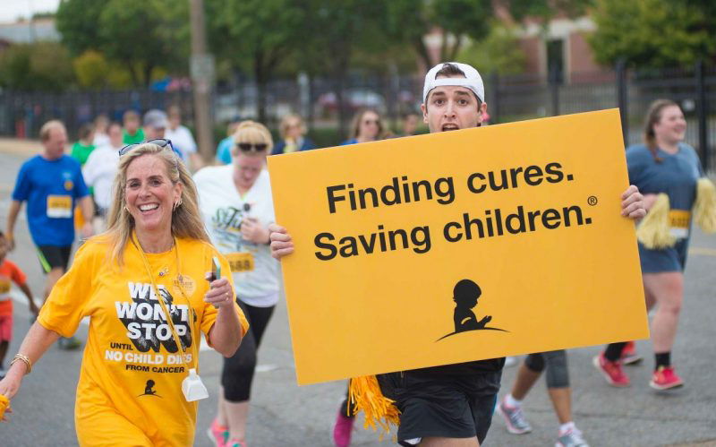

iTalkBB蜻蜓连续5年助力St. Jude Children's Hospital！每次爱心，都有你的一份！
9月是全美儿童癌症关注月，St. Jude Children's Hospital每年在这一时间会发起 “Walk/Run to End Childhood Cancer”活动，届时全美58个城市会有上万人，走出家门，与家人和朋友一起参与活动。

华盛顿地区2017年St. Jude慈善游行在9月23日Nationals Park圆满举办。而这是一场慈善与娱乐相结合的活动，所有参与者可以即可以献爱心，又可以在活动中获得无限乐趣！


作为全美最大的为患癌儿童提供治疗的非营利医院，St.Jude无偿收治来自全美50个州和世界各地的患癌儿童。同时为了提高世界各地罹患癌症和其他先天性疾病的儿童存活率，St.Jude国际拓展项目在17个国家建立了24个官方合作站，将爱心散播到更远的地方。
而iTalkBB蜻蜓做为St. Jude的赞助商，除了长期为儿童癌症患者提供善款之外，iTalkBB蜻蜓已经连续5年参与"St. Jude Walk/Run to End Childhood Cancer"慈善游行。在未来，iTalkBB蜻蜓也将一如既往支持慈善事业，发扬“We Love, We Care”的精神，与St. Jude一起召唤人们对儿童癌症的重视，为儿童患者献出一点爱心。
2017 iTalkBB蜻蜓助力St Jude慈善游行
iTalkBB蜻蜓员工及其家人热情参与活动
2017 iTalkBB蜻蜓此次慈善游行的文化衫设计
Why St. Jude? Why It Matters?
St. Jude作为全美排名第一的儿童癌症医院，一直为抗击儿童癌症做出卓越的贡献。所有入住St. Jude的儿童患者，所有医疗费用全部免费。St. Jude甚至为儿童患者和其家属免费提供住食宿和交通，以方便家属陪伴自己的孩子。

自从St. Jude成立50多年以来，St. Jude出色的医疗服务把儿童癌症治愈的成功率从20%提高到80%以上！每年都有更多的儿童和家庭被St. Jude拯救！

作为一个非盈利的慈善医院，在坚持为癌症儿童患者提供免费医疗服务的St. Jude，其所有医疗和运营费用的75%都来自于社会的资助和捐款。

所以，自发性的捐款和吸引更多人为St. Jude捐款，这对St. Jude和其救治的儿童癌症患者尤为重要。
而每年的慈善游行让更多人了解癌症给儿童和壹个家庭造成的毁灭性打击，让更多人投入到对抗儿童癌症的战役中来，消除比癌症更可怕的无知和冷漠。
而致力于“为海外华人打造美好生活”的iTalkBB蜻蜓在与St. Jude合作时，一直积极鼓励员工自发捐款，并参与慈善游行充当志愿者，身体力行为抗击癌症风险一份自己的力量。
iTalkBB蜻蜓每一位员工都坚信“Together, We Make a Difference”。作为iTalkBB蜻蜓大家庭的一员，当我们凝聚在一起时，让我们创造改变，合力帮助更多儿童癌症患者、康复者及其家人创造更美好的人生。
Together, We Make a Difference!

2017 iTalkBB蜻蜓志愿者代表团
2015 iTalkBB蜻蜓志愿者代表团

2014 iTalkBB蜻蜓志愿者代表团

2013 iTalkBB蜻蜓志愿者代表团
除了充当志愿者之外，iTalkBB蜻蜓特地为St. Jude设立捐款页面。短短的几天内，善款的总数目已经达到$1,112，而这个数目还在持续不断的增加。
癌症，这个词也许离你很远。但能够为抗击癌症做出一点贡献的机会，却离我们很近！
iTalkBB蜻蜓，在未来将始终走在这条公益的道路上，一如既往，为爱前行。